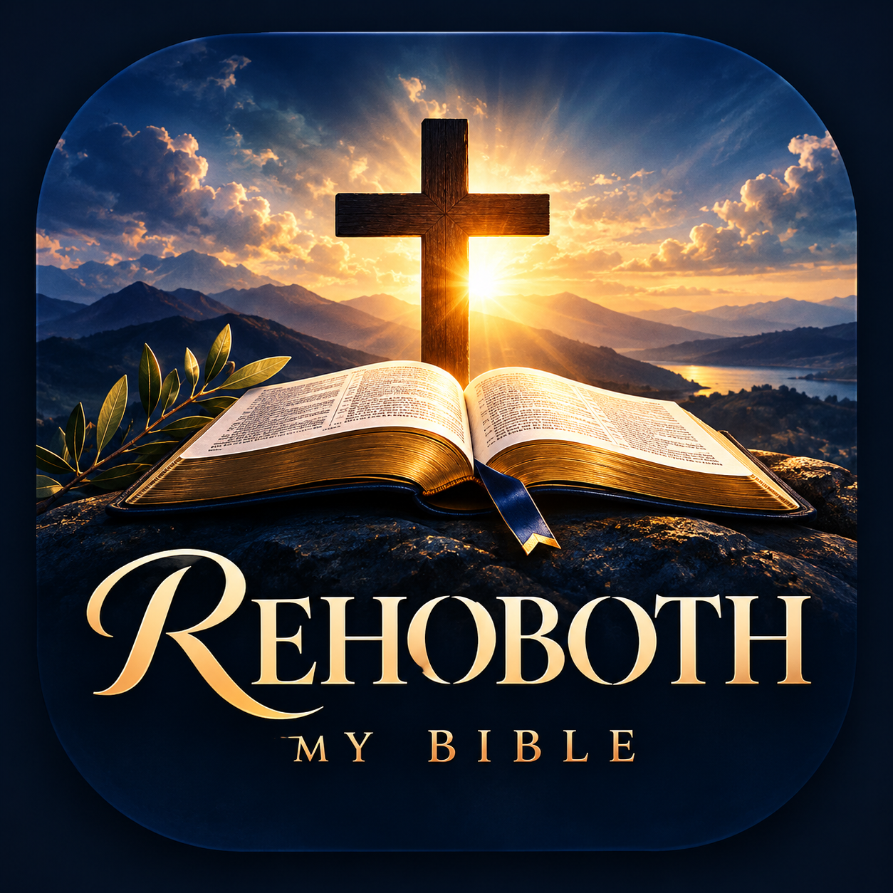

A little more room to read
MY BIBLERehoboth
Read in the words you know.
Choose KJV, NIV, AMP or Yoruba. All four translations are available offline, wherever you happen to be.
For Android
MY BIBLE — Rehoboth brings Scripture, prayer notes and your personal journal together in one focused offline app.
Download the app↓
Good morning
“Be still, and know that I am God.”
Psalm 46:10Choose KJV, NIV, AMP or Yoruba. All four translations are available offline, wherever you happen to be.
Keep prayer notes, journal entries and highlighted verses together. Your notes stay on your device.
Let me listen, wait and walk in wisdom.
Saved privatelyKeep track of your reading and make time for a short devotional when it suits you.
For Android 7.0 and newer